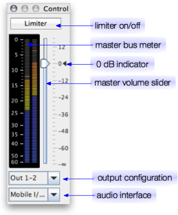

The control room window is like the main or control room section of a mixing console. There is no separate main and control room bus in Eisenkraut, so their meaning is interchangeable.

Eisenkraut maintains a set of output configurations which allow you to switch between different set-ups. An output configuration is a mapping from logical main bus channels to physical sound card channels. For example, you might have a stereo configuration that goes to the first two sound card channels, but you might also occasionally need a stereo configuration that plays on your sound card channels 2 and 4. The output configuration also contains panorama information. Configurations can be created and edited in the I/O Setup window.
All configurations created in the I/O setup appear in this combo box, and you can switch configuration by clicking on the triangle on the right side of the box and choosing the desired configuration from the list.
This combo box contains all audio interfaces (sound cards) that were created in the audio preferences. Choosing an interface from this box will switch the sound card that is used for playback. The SuperCollider server cannot switch sound cards on the fly, so whenever it is running, changing the audio interface will bring up a dialog that asks you if the server should be rebooted. Note that when you choose a sound card that is currently not available, SuperCollider will usually still boot up with a default sound card instead.
The slider determines the volume that is applied to all sound files being played back. The maximum boost ist +18 dB, while the maximum attenuating goes down to just before -72 dB and then will cut down to completely muting the playback (-∞ dB). A small black triangle will appear next to the 0 dB label whenever the slider is positioned exactly at 0 dB, meaning that the signal passes without any boost or attenuation. You can quickly reset the gain to 0 dB by Alt+Click on the slider.
The limiter is usefull when you are playing back floating-point files whose maximum gain is unknown, so you can be sure to not cause clipping-distortion. It is also usefull when playing back multi-channel files on a stereo configuration, where more than one source channel contributes to the signal on each speaker, potentially bringing the overall volume above the 0 dBFS limit.
The limiter is based on SuperCollider's Limiter UGen and it thus completely transparent for signals that are below -0.09 dBFS, so you can safely leave the limiter on without degrading audio quality. The lookahead time is 10 ms.
Eisenkraut provides high precision main bus meters which indicate peak-hold, instantaneous peak, and RMS energy for each channel. The meter is currently fixed to reflect pre-fader levels, a future version might offer a switch to monitor post-fader signal level.
The monitored range is 0 dBFS down to -60 dBFS. The peak hold time is 2.5 seconds. Peak hold and instantaneous peak are calculated from the rectified signal. They fall from 0 dBFS to -20 dBFS in 1.5 seconds, and below fall speed is 40 dB per 2.5 seconds. The same fall speed is used for the RMS value which is calculated by passing the rectified signal through a first-order lowpass filter whose -60 dB point is reached after 100 ms.